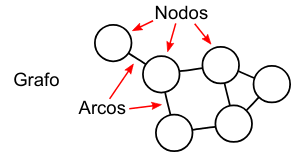
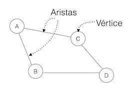
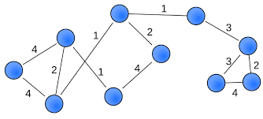
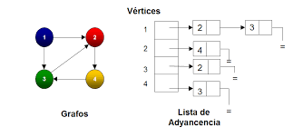
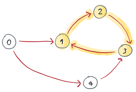
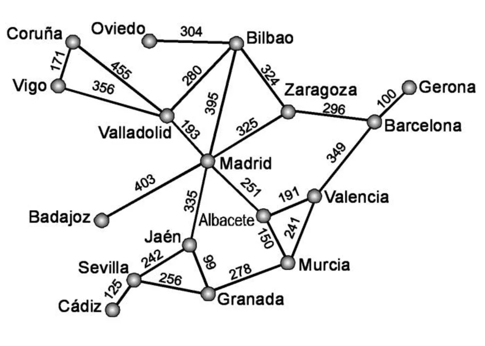

Grafos
Los grafos en estructuras de datos son representaciones visuales y matemáticas de un conjunto de objetos interconectados, llamados nodos, a través de enlaces llamados aristas. Estos nodos y aristas forman una red que puede utilizarse para modelar relaciones entre diferentes elementos. Los grafos son una herramienta poderosa para representar y analizar una variedad de situaciones y problemas en ciencias de la computación y otras disciplinas.

Representa una entidad individual en el grafo. Los nodos pueden tener información asociada, conocida como "datos" o "pesos".
Es una conexión entre dos nodos que indica una relación entre ellos. Las aristas pueden ser dirigidas o no dirigidas. En un grafo dirigido, la arista tiene un punto de inicio y un punto final, mientras que en un grafo no dirigido, la arista simplemente conecta dos nodos sin una dirección específica.
Es un valor asociado a una arista que puede representar alguna medida o costo. No todos los grafos tienen pesos en sus aristas.
Los nodos conectados por una arista se llaman vecinos o nodos adyacentes. La vecindad de un nodo es el conjunto de nodos conectados a él por aristas.
Un ciclo es una secuencia de nodos donde el primer nodo es igual al último, y cada nodo en la secuencia está conectado al siguiente mediante una arista.
En un grafo dirigido, cada arista tiene una dirección. Los pares ordenados de nodos (u, v) y (v, u) son tratados como distintos, lo que significa que hay una diferencia entre el nodo de inicio y el nodo de llegada.
This is a longer card with supporting text below as a natural lead-in to additional content.
Un grafo conexo tiene al menos un camino entre cada par de nodos, lo que significa que no hay nodos aislados.
Un grafo ponderado tiene asignados pesos a sus aristas, lo que significa que cada arista tiene un valor asociado. Estos pesos pueden representar distancias, costos, tiempos, etc.
Un grafo cíclico contiene al menos un ciclo, es decir, hay una secuencia de aristas que forma un circuito cerrado.
Un grafo cíclico contiene al menos un ciclo, es decir, hay una secuencia de aristas que forma un circuito cerrado.
Los grafos se pueden encontrar en numerosas situaciones de la vida cotidiana para modelar relaciones y conexiones. Aquí tienes un ejemplo de la distancia entre las ciudades de España interpretado en un grafo:
